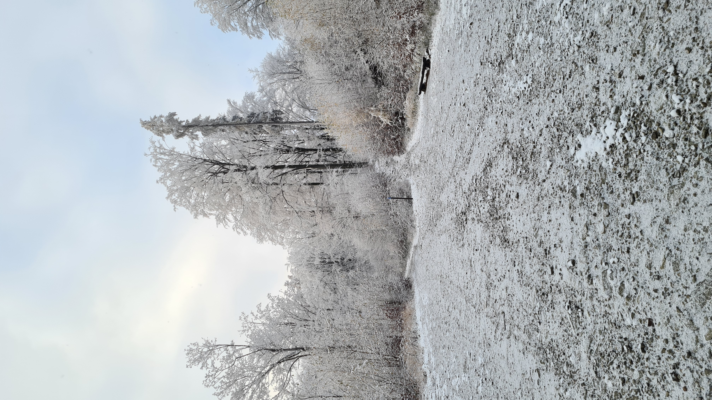
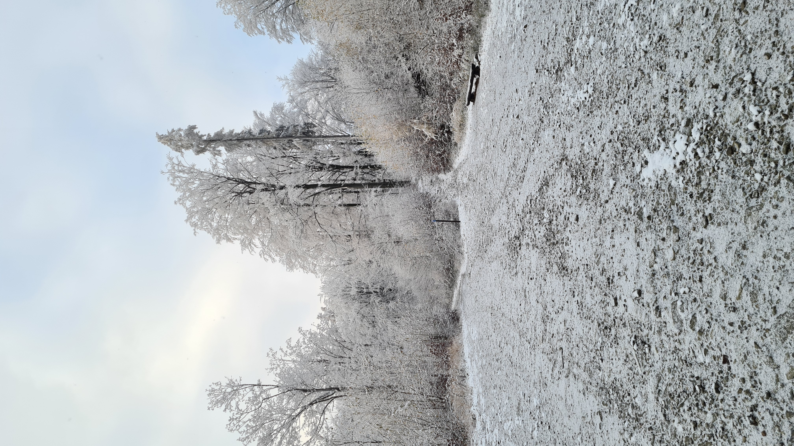
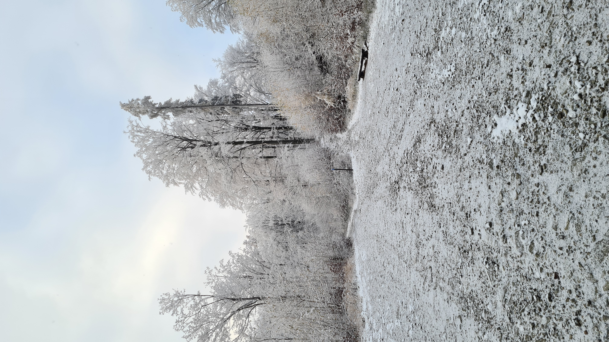

Zawód: Inżynier Budowlany
Aktualne stanowisko: Kierownik Budowy
Hobby: sport(bieganie, OCR, jazda na rowerze, squash), muzyka, majsterkowanie
Praca w budownictwie mocno mnie wyeksploatowała ale też ukształtowała i wzmocniła psychicznie. Nad
programowaniem
zastanawiałem się od 2 lat ale dopiero teraz zdecydowałem się zrobić pierwszy krok. Nie
przekonała mnie kasa (na zarobki nie narzekam) ale potrzeba rozwoju
osobistego. Aktualnie dzielę mój czas na pracę zawodową, rodzinę, obowiązki domowe oraz
hobby
dlatego na kurs
nie
pozostaje mi dużo wolnego czasu. Każdą możliwą chwilę staram się poświęcać na naukę ale na razie mam jeszcze
jakąś blokadę w głowie, że to się może nie udać. Zdaję sobie sprawę, że ucząc się "po
godzinach" moje postępy nie będą szybkie ale na początek nie da się inaczej. Mam dużo do stracenia w
aktualnej
pracy ale powoli step by step i w którymś momencie uznam, że to już ten czas. Nikt z rodziny nie
wie, że rozpoczynamy nowy etap w życiu :)
Jeśli
się uda utrzymać w tajemnicy to przetrzymam Ich przynajmniej do końca tego kursu.
Puki co czeka mnie
jeszcze dużo
pracy :)
